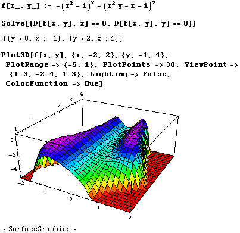

The function above of two variables has only two critical points and they are both maxima, the obvious ones pictured above. There are no saddle points anywhere.
The example is from Stewart's Calculus 3rd, edition. The plot is colored by height. Return to Dr. Cleary's homepage